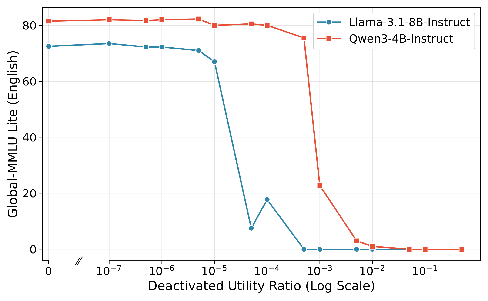
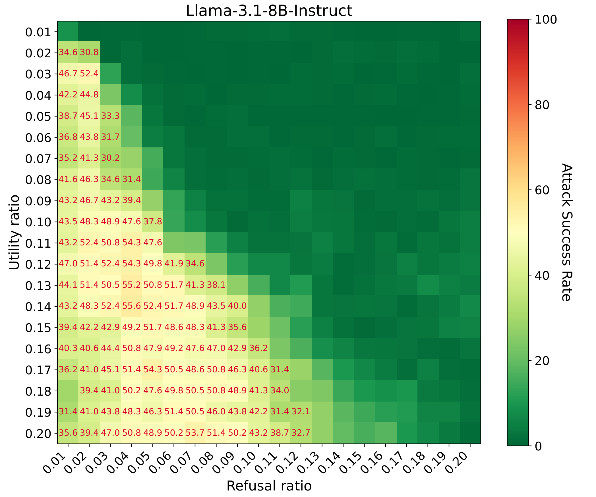
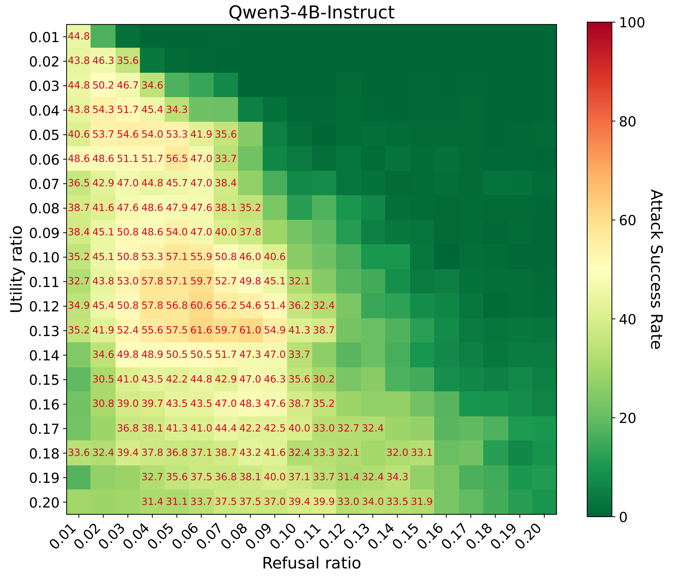

A modern instruction-tuned LLM packs general reasoning, world knowledge, multilingual competence, and safety alignment into a single dense pile of parameters. From the outside it behaves like one model. From the inside, only a small fraction of its weights actually carries any given behaviour.
CritNeT is a small PyTorch toolkit for finding and acting on that small fraction. Given any calibration corpus, it ranks every neuron of a transformer LM by a cheap first-order Taylor importance score, then lets you deactivate, freeze, or selectively fine-tune the resulting top-$k$ critical set. This post is an extended, code-illustrated companion to the paper. It mirrors the paper's three-part structure:
- Critical Neurons Detection — how the importance score is defined and computed.
- Utility, Refusal, and Safety Neurons — isolating safety-specific neurons by set difference, deactivating them, and stress-testing them under fine-tuning.
- Foundational Neurons and PEFT — turning multilingual critical-neuron sets into a structurally sparse, drop-in alternative to LoRA.
Each section ends with a concise Python snippet using the actual critnet API.
Section 1
Critical Neurons Detection
Let $\mathcal{W}$ denote the full parameter set of an LLM, and let $w_i$ be the parameter vector of a single candidate neuron — concretely, a row of an attention / FFN projection (one output channel), a column of an output / down projection (one input channel), or a single scalar of a layer-norm vector. A "neuron" is therefore a whole vector of weights, not just one number.
We want to know how important $w_i$ is for a given domain corpus $\mathcal{D}_t$. The most informative quantity is the change in loss if we deleted that neuron:
$$ \mathcal{I}_t(w_i) \;=\; \bigl| \mathcal{L}(\mathcal{W}, \mathcal{D}_t) - \mathcal{L}(\mathcal{W} \mid w_i = \mathbf{0}, \mathcal{D}_t) \bigr|. $$Evaluating this exactly would mean one forward pass per neuron — hopelessly expensive at the 4B–8B scale. A first-order Taylor expansion at the current weights collapses the cost to a single backward pass over the entire corpus:
$$ \mathcal{I}_t(w_i) \;\approx\; \bigl| w_i^{\top}\, \nabla_{w_i} \mathcal{L}(\mathcal{W}, \mathcal{D}_t) \bigr|. $$
In code this is the elementwise product
$|W \odot \nabla_W \mathcal{L}|$ reduced along the appropriate axis
(sum over input dim for row modules, sum over output dim for column
modules, identity for norm scalars). All per-neuron scores from every
targeted module are then pooled into a single list, and the top
fraction sparsity_ratio of that list is kept. This
global top-$k$ is the key design choice: attention
QKV neurons, FFN gate/up/down neurons, and norm scalars all compete
on the same scale.
How concentrated is the model's capability in this top-$k$ set? Deactivating less than 0.1 % of utility-critical neurons drives Global-MMLU performance to near zero for both models we test on — core language understanding is very concentrated.

Detecting critical neurons in code
In CritNeT the entire pipeline is one config + one call. The config
describes which modules to target and the sparsity ratio; the detector
runs one backward pass over a DataLoader and writes the
surviving indices into config.neuron_indices:
import torch
from transformers import AutoModelForCausalLM
from critnet import CriticalNeuronConfig, NeuronDetector
MODEL = "Qwen/Qwen3-4B-Instruct-2507"
model = AutoModelForCausalLM.from_pretrained(MODEL, torch_dtype=torch.bfloat16).cuda()
config = CriticalNeuronConfig(
sparsity_ratio=0.05, # keep the top 5% of pooled neurons
base_model_name_or_path=MODEL,
)
NeuronDetector(model, config).detect(calibration_loader, mode="chat")
config.save_pretrained("./neurons") # writes neuron_indices.json
The defaults target q_proj, k_proj,
v_proj, gate_proj, up_proj
(row modules), o_proj, down_proj (column
modules), and input_layernorm,
post_attention_layernorm (norm modules) — the standard
LLaMA / Mistral / Qwen suffix set. For Qwen-3 you can add
q_norm, k_norm to
norm_modules. Each batch yielded by
calibration_loader must contain input_ids,
attention_mask, and labels (with prompt
tokens masked to -100 in "chat" mode so only
completion tokens contribute to the loss).
Section 2
Utility, Refusal, and Safety Neurons
Instruction-tuned LLMs entangle general capability with safety alignment. To disentangle them, we detect critical neurons on two corpora and then take a set difference.
Let $\mathcal{N}_u^p$ denote the top-$p$ critical neurons for a utility corpus $\mathcal{D}_u$ (helpful behaviour on benign queries), and $\mathcal{N}_r^q$ the top-$q$ critical neurons for a refusal corpus $\mathcal{D}_r$ (safety on adversarial queries). The safety neurons — those uniquely specialised for refusal without contributing to general reasoning — are
$$ \mathcal{N}_s \;=\; \mathcal{N}_r^q \;\setminus\; \mathcal{N}_u^p. $$Experimental setup
Corpora. $\mathcal{D}_u$ is a 1,630-sample English mix: 1,000 LIMA conversational pairs and 630 s1k-1.1 reasoning samples (filtered to those marked as correctly distilled from DeepSeek-R1). $\mathcal{D}_r$ is 1,000 harmful-prompt / refusal-response pairs from Bianchi et al.
Models. Llama-3.1-8B-Instruct and
Qwen3-4B-Instruct.
Evaluation. Utility is measured on the English subsets of ARC-E, PolyMath, and Global-MMLU-Lite. Safety is measured by Attack Success Rate (ASR) on the English subset of MultiJail with the open-source HarmBench LLaMA-2-13B classifier.
Isolating $\mathcal{N}_s$ requires balancing the two ratios. We grid-search over $(p, q)$:


We pick $p=0.14$, $q=0.04$ for Llama-3.1 (yielding $|\mathcal{N}_s|$ equivalent to ~1.8 % of parameters) and $p=0.13$, $q=0.06$ for Qwen3-4B (~1.5 %).
Isolating safety neurons in code
The set-difference $\mathcal{N}_r^q \setminus \mathcal{N}_u^p$ is
exactly what NeuronStatistician.analyze(...) returns as
result.exclusive["refusal"]. With the safety set in
hand, NeuronDeactivator zeros out the corresponding
weight slices in place — the model architecture is unchanged, so the
result is just a normal HuggingFace checkpoint.
from critnet import (
CriticalNeuronConfig, NeuronDetector,
NeuronStatistician, NeuronDeactivator,
)
# 1. Detect utility-critical and refusal-critical sets.
cfg_u = CriticalNeuronConfig(sparsity_ratio=0.13, base_model_name_or_path=MODEL)
NeuronDetector(model, cfg_u).detect(utility_loader, mode="chat")
cfg_r = CriticalNeuronConfig(sparsity_ratio=0.06, base_model_name_or_path=MODEL)
NeuronDetector(model, cfg_r).detect(refusal_loader, mode="chat")
# 2. Isolate safety neurons by set difference: N_s = N_r \ N_u.
result = NeuronStatistician(model=model, config=cfg_r).analyze({
"utility": cfg_u.neuron_indices,
"refusal": cfg_r.neuron_indices,
})
safety_indices = result.exclusive["refusal"]
print(f"|N_s| ~ {result.param_coverage(safety_indices):.2f}% of model params")
# 3. Deactivate the safety neurons in place.
cfg_s = CriticalNeuronConfig(
sparsity_ratio=0.06, base_model_name_or_path=MODEL,
neuron_indices=safety_indices,
)
NeuronDeactivator(model, cfg_s).deactivate()
The full runnable version, including the corpora and a generation
comparison on a harmful prompt, is in
quickstart_safety_neurons.py
at the repo root.
Targeted deactivation preserves utility but breaks safety
The behavioural split is sharp (English subsets; higher is better for utility, lower is better for ASR):
| Method | ARC-E ↑ | PolyMath ↑ | MMLU ↑ | MultiJail ASR ↓ |
|---|---|---|---|---|
| Llama-3.1-8B-Instruct | ||||
| Original | 94.3 | 47.2 | 73.2 | 10.2 |
| Random deactivation (~1.5 %) | 82.2 | 32.0 | 58.2 | 6.4 |
| Safety deactivation $\mathcal{N}_s$ | 91.9 | 24.8 | 66.2 | 55.6 |
| Qwen3-4B-Instruct | ||||
| Original | 98.0 | 59.2 | 82.0 | 3.5 |
| Random deactivation (~1.5 %) | 97.4 | 53.2 | 76.2 | 1.6 |
| Safety deactivation $\mathcal{N}_s$ | 96.8 | 50.8 | 74.2 | 61.6 |
Table 1. Neuron deactivation results (English only). Safety deactivation preserves utility while severely degrading safety, whereas random deactivation of a comparable mass affects the model at a smaller scale.
Two things stand out. First, random deactivation of a comparable parameter mass reduces ASR — a less coherent model is less likely to follow a harmful instruction — so the safety-deactivation signal cannot be explained by generic capability damage. Second, deactivating $\mathcal{N}_s$ keeps MMLU and ARC-E close to their original values while sending ASR up by 5–17×. These ~1.5–1.8 % of parameters behave like centralised gatekeepers for alignment in both model families.
Fine-tuning attacks bypass safety neurons
A natural follow-up: if we know which neurons enforce refusal, can we
protect them against fine-tuning attacks by freezing
them while letting the rest of the model learn? CritNeT exposes
freeze_neurons for exactly this experiment. Under the
hood it registers backward hooks that zero the gradient slices of the
chosen neurons, so the forward pass is identical to the base model
(zero overhead) and the optimiser cannot update those slices.
import json
from transformers import AutoModelForCausalLM, Trainer, TrainingArguments
from critnet import CriticalNeuronConfig, freeze_neurons
model = AutoModelForCausalLM.from_pretrained(MODEL)
with open("./neurons/safety_indices.json") as f:
safety_indices = json.load(f)
handle = freeze_neurons(model, safety_indices, config=CriticalNeuronConfig())
handle.print_frozen_summary()
trainer = Trainer(
model=model,
args=TrainingArguments(output_dir="./ft_ckpts",
num_train_epochs=3, weight_decay=0.01),
train_dataset=train_dataset,
callbacks=[handle.make_trainer_callback()], # undo weight-decay drift each step
)
trainer.train()
Running this on the same 1,630-sample benign English corpus yields:
| Method | Original ASR | Full FT ASR | Frozen-Tuning ASR |
|---|---|---|---|
| Llama-3.1-8B-Instruct | 10.2 | 21.6 | 24.4 |
| Qwen3-4B-Instruct | 3.5 | 20.0 | 17.1 |
Table 2. Attack success rate (lower is better) with fine-tuning attacks on MultiJail-En.
Both vanilla full FT and frozen-safety FT degrade alignment substantially; frozen FT is not consistently better than full FT (and on Llama-3.1 it is worse). The interpretation is uncomfortable but clear: safety behaviour is not implemented only by the frozen neurons in isolation; benign fine-tuning of the surrounding pathways can route around the protected ones to generate harmful outputs. Preserving weights is necessary but not sufficient for resilient alignment.
Section 3
Foundational Neurons and Parameter-Efficient Fine-Tuning
The set-difference idea generalises beyond safety. Given a set of languages $\mathcal{T}$ with per-language corpora $\mathcal{D}_t$, let $\mathcal{N}_t$ be the top-$p$ critical neurons for language $t$ at a uniform ratio $p$. The foundational neurons are the union of these per-language sub-networks:
$$ \mathcal{N}_{\text{all}} \;=\; \bigcup_{t \in \mathcal{T}} \mathcal{N}_t. $$$\mathcal{N}_{\text{all}}$ is the set of neurons critical for at least one of the target languages. The hypothesis is that updating only these neurons during fine-tuning should (i) be cheap because they are a fraction of the model and (ii) preserve foundational knowledge because everything outside $\mathcal{N}_{\text{all}}$ is frozen.
Critical Neurons Tuning as PEFT
For a base linear layer with weight $W \in \mathbb{R}^{d_{\text{out}} \times d_{\text{in}}}$, instead of decomposing $\Delta W$ into low-rank factors $BA$ (LoRA), we parameterise a structurally sparse delta restricted to the indices in $\mathcal{N}_{\text{all}}$:
$$ h \, (W + \Delta W)^{\top} \;=\; h \, W^{\top} \;+\; h \, \Delta W^{\top}. $$$\Delta W$ is never materialised as a dense matrix. Let $k = |\mathcal{N}_{\text{all}}|$ for this layer. We instantiate the trainable subset $\Delta W_{\text{train}}$ in one of two shapes depending on whether the critical neurons are output (rows) or input (columns) of $W$:
-
Row mode (e.g.
q_proj,up_proj): $\Delta W_{\text{train}} \in \mathbb{R}^{k \times d_{\text{in}}}$, injected only into the selected output indices, $$ y_{\mathcal{N}_{\text{all}}} \;=\; (h W^{\top})_{\mathcal{N}_{\text{all}}} + h \, \Delta W_{\text{train}}^{\top}. $$ -
Column mode (e.g.
o_proj,down_proj): $\Delta W_{\text{train}} \in \mathbb{R}^{d_{\text{out}} \times k}$, applied to the sliced input, $$ y \;=\; h W^{\top} + h_{\mathcal{N}_{\text{all}}} \, \Delta W_{\text{train}}^{\top}. $$
In both modes $\Delta W_{\text{train}}$ is initialised to zero, so the wrapped model's first forward pass is bit-identical to the base model. Because $k$ is a marginal fraction of the layer dimension ($< 10\%$), this is a natural PEFT method.
Critical-neuron PEFT in code
get_neuron_model walks a HuggingFace model and replaces
every targeted module with a LinearDeltaSubspace (or
norm / embedding variant) keyed on config.neuron_indices.
It freezes all base parameters, marks only the deltas as trainable,
and returns a CriticalNeuronModel that behaves like a
normal nn.Module — fully compatible with
transformers.Trainer.
import torch
from transformers import AutoModelForCausalLM, Trainer, TrainingArguments
from critnet import (
CriticalNeuronConfig, NeuronDetector, NeuronStatistician,
get_neuron_model, CriticalNeuronModel,
)
MODEL = "Qwen/Qwen3-4B-Base"
# 1. Detect per-language critical neurons.
model = AutoModelForCausalLM.from_pretrained(MODEL, torch_dtype=torch.bfloat16).cuda()
lang_indices = {}
for lang, loader in lang_loaders.items(): # en, zh, ar, sw
cfg = CriticalNeuronConfig(sparsity_ratio=0.05, base_model_name_or_path=MODEL)
NeuronDetector(model, cfg).detect(loader, mode="chat")
lang_indices[lang] = cfg.neuron_indices
# 2. Foundational set N_all = union of per-language sets.
result = NeuronStatistician(model=model, config=cfg).analyze(lang_indices)
foundational = result.union
# 3. Wrap the model so only the delta over N_all is trainable.
del model
cfg = CriticalNeuronConfig(sparsity_ratio=0.05, base_model_name_or_path=MODEL,
neuron_indices=foundational)
base = AutoModelForCausalLM.from_pretrained(MODEL, torch_dtype=torch.bfloat16)
wrapped = get_neuron_model(base, cfg)
wrapped.print_trainable_parameters()
# 4. Train with HF Trainer, then merge the delta into a vanilla checkpoint.
Trainer(model=wrapped,
args=TrainingArguments(output_dir="./ckpts", num_train_epochs=1),
train_dataset=train_dataset).train()
wrapped.save_pretrained("./my_adapter")
merged = CriticalNeuronModel.from_pretrained(
MODEL, "./my_adapter", model_kwargs={"torch_dtype": torch.bfloat16},
)
plain = merged.merge_and_unload() # plain nn.Module, ready to ship
plain.save_pretrained("./my_merged_model")
Experiments and analysis
Training data. We start from the same 1,630-sample
English corpus and use Gemini 2.0 Flash to translate it
into Chinese, Arabic, and Swahili, giving four typologically diverse
languages ($\mathcal{T} = \{\text{en}, \text{zh}, \text{ar}, \text{sw}\}$)
that span the high- to low-resource spectrum.
Detection. We apply a uniform ratio $p = 1\%$ and $p = 5\%$ across $\mathcal{T}$. The resulting $\mathcal{N}_{\text{all}}$ covers roughly 3 % and 11 % of the model's total parameters.
Baselines. LoRA at ranks $r=64$ and $r=512$, plus full fine-tuning.
Evaluation. We extend the utility suite from
Section 2 to 13 languages, partitioned into 4 seen (in the
training mix) and 9 unseen
(bn, de, es, fr, id, it, ja, ko, pt).
| Method | %Param | 4 Seen languages | 9 Unseen languages | ||||||
|---|---|---|---|---|---|---|---|---|---|
| ARC-E | PolyM | MMLU | Avg | ARC-E | PolyM | MMLU | Avg | ||
| Llama-3.1-8B | |||||||||
| Base (zero-shot) | 0.0 % | 59.3 | 12.5 | 44.1 | 38.6 | 65.8 | 13.8 | 44.7 | 41.4 |
| Full FT | 100 % | 60.9 | 19.5 | 44.9 | 41.8 | 66.3 | 20.4 | 45.6 | 44.1 |
| LoRA | 2.0 % | 57.0 | 16.0 | 42.8 | 38.6 | 63.5 | 18.9 | 44.2 | 42.2 |
| Neuron (CritNeT) | 2.3 % | 59.6 | 19.8 | 44.4 | 41.3 | 65.7 | 24.0 | 46.0 | 45.2 |
| LoRA | 14.3 % | 58.1 | 16.8 | 43.8 | 39.6 | 64.5 | 19.9 | 45.1 | 43.2 |
| Neuron (CritNeT) | 10.4 % | 63.2 | 20.7 | 46.7 | 43.5 | 69.0 | 23.7 | 48.5 | 47.1 |
| Qwen3-4B-Base | |||||||||
| Base (zero-shot) | 0.0 % | 75.8 | 38.1 | 54.9 | 56.3 | 90.7 | 42.5 | 61.5 | 64.9 |
| Full FT | 100 % | 75.9 | 45.0 | 58.0 | 59.6 | 88.4 | 48.0 | 62.3 | 66.2 |
| LoRA | 3.2 % | 74.4 | 41.4 | 55.8 | 57.2 | 86.4 | 44.4 | 61.6 | 64.1 |
| Neuron (CritNeT) | 2.3 % | 75.7 | 42.6 | 56.6 | 58.3 | 88.9 | 49.0 | 62.2 | 66.7 |
| LoRA | 20.8 % | 74.5 | 42.0 | 57.3 | 57.9 | 86.6 | 45.9 | 60.7 | 64.4 |
| Neuron (CritNeT) | 10.8 % | 75.9 | 44.2 | 57.6 | 59.2 | 88.7 | 49.4 | 62.0 | 66.7 |
Table 3. Parameter-efficient fine-tuning results. Neuron-based tuning consistently outperforms standard LoRA at equivalent (or smaller) parameter counts. Bold rows are superior to the corresponding LoRA baseline.
Two patterns are worth flagging:
- Sharper PEFT than LoRA. At every matched (or smaller) parameter budget, neuron-tuning beats LoRA on average — on both seen and unseen languages, on both model families. Concentrating capacity on neurons that are already critical for the calibration corpus is, empirically, a better inductive bias than letting LoRA spread low-rank updates across every projection.
- Resilience to catastrophic forgetting. At ~10 % budget on Llama-3.1-8B, neuron tuning reaches an unseen-language average of 47.1, versus 44.1 for full FT (which barely beats the 41.4 base model). Restricting updates to language-critical pathways preserves foundational knowledge while still benefiting from supervised data — a strict win over full fine-tuning on out-of-distribution languages.
Conclusion
One score, three tools
CritNeT is built around one observation: transformer language models behave like sparse functional systems, and the few percent of neurons that carry a given behaviour can be identified with one backward pass over a calibration corpus. From that single primitive, three concrete tools fall out:
- $\mathcal{N}_s = \mathcal{N}_r^q \setminus \mathcal{N}_u^p$ — isolating safety neurons. Deactivating ~1.5–1.8 % of parameters drives MultiJail ASR up by 5–17× while leaving ARC-E / MMLU largely intact. Freezing them during benign FT does not defend against fine-tuning attacks — alignment can be routed around.
- $\mathcal{N}_{\text{all}} = \bigcup_t \mathcal{N}_t$ — foundational neurons as a sharp PEFT signal. Tuning only $\mathcal{N}_{\text{all}}$ outperforms LoRA at every matched parameter budget on both seen and unseen languages, and beats full fine-tuning on out-of-distribution languages at ~10 % budget.
- The underlying $\bigl| w_i^{\top} \nabla_{w_i} \mathcal{L} \bigr|$ score itself — a cheap, model-agnostic per-neuron importance that yields causal claims when paired with deactivation.
The toolkit is one self-contained package —
CriticalNeuronConfig, NeuronDetector,
NeuronStatistician, NeuronDeactivator,
get_neuron_model, freeze_neurons — and every
workflow consumes the same neuron_indices.json artefact,
so detection happens once and can be reused for analysis, ablation,
freezing, or sparse PEFT.